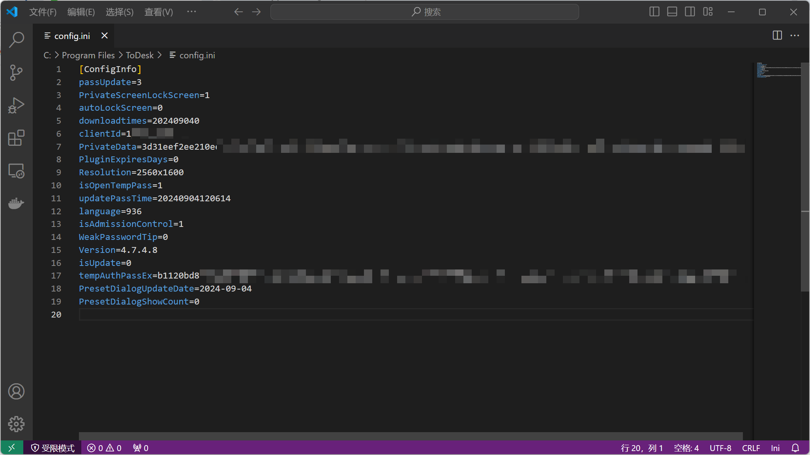
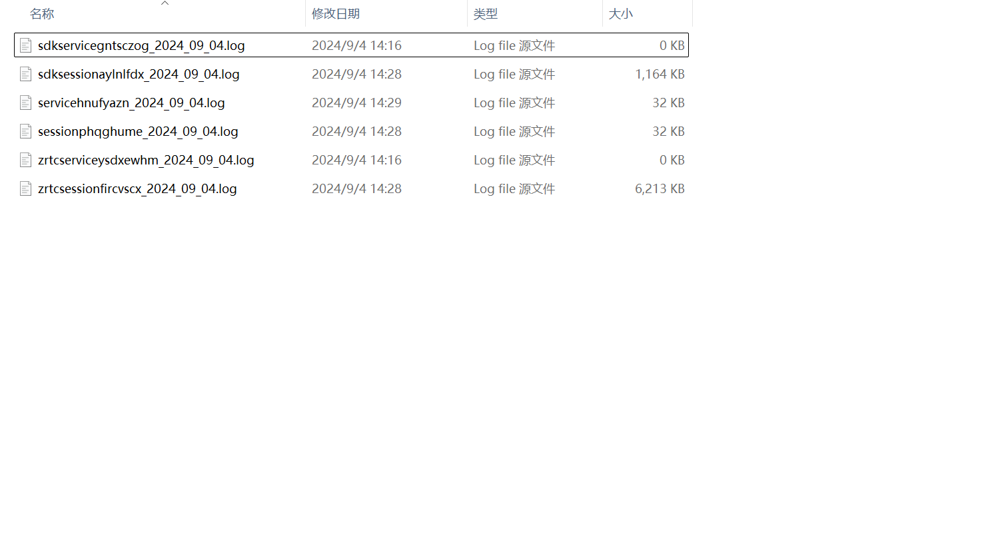

利用ToDesk内网渗透与应急响应

利用ToDesk内网渗透
测试环境：控制端Windows11，被控端Windows7
测试版本：ToDeskV4.7.4.8
重点关注路径：
C:\Users\主机名\AppData\Local\ToDesk
查阅官方文档可发现ToDesk支持命令行静默安装&绑定设备
ToDesk_Setup.exe的/S参数可以实现静默安装
ToDesk_Setup.exe /S |
程序会安装到如下的默认路径
C:\Program Files\ToDesk |
该路径下会有一个config.ini文件，这个文件里面有着连接ToDesk的临时密码

此处的ClientId是被控端设备代码、tempAuthPassEx是加密后的临时密码，将其复制到本地ToDesk配置文件中替换我们的本地密码，即可获得对方连接密码
如果对方登录了账号，还会有意外之喜
NewToken=Token1 |
此外C:\Program Files\ToDesk\Logs中的日志还会记录本机用户名、GPU等信息，时间及测试样本不足原因不再细究
在如下目录中
C:\Users\主机名\AppData\Local\ToDesk |
存在advInfo.json和devlist_xxxxxxxx.json文件，其中list中保存历史的连接记录，具体存放如下信息（无用信息及隐私信息已删），可使用这些信息解密PassEx以获取明文
{ |
其中UserName即为设备列表中存储的设备名字，UserId为存储的设备Id
一键提取密码工具
flydyyg大佬的github的开源项目readTdose-xiangrikui
Go语言编写，go build编译成exe程序即可使用，一键自动提取ToDesk以及向日葵密码

清除痕迹
@echo off |
应急响应
被控端会在安装目录下的Logs文件夹中生成如下六个文件

其中重点位于session和service开头的两个log文件中
- session
2024-09-04 14:28:10,785: INFO infoCategory : CRTCClientWork openScreen 0 控制端设备代码 |
第二条关键句中有**"LocalIpport":和"RemotePort":**可快速定位得知控制端设备IP
- service
2024-09-04 14:16:54,754: INFO infoCategory : [setting] hearbeat config:{"platform":"对方设备类型 |
第三句解释：客户端接收连接请求消息参数为247，表示被控端被上传文件
评论
评论插件加载失败
正在加载评论插件